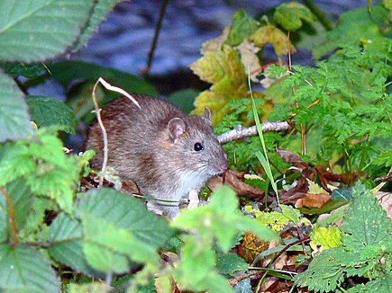

Rattus est un genre de gros Muridés originaires d'Asie dont deux espèces ont colonisé l'Europe et le reste du monde
| Propriétés des rats | ||
|---|---|---|
| Cool | beaux | soyeux |
Ce sont des animaux omnivores
Ici l'image d'un rat cool
vraiment cool

Photo d'un hater de rat
venant de git